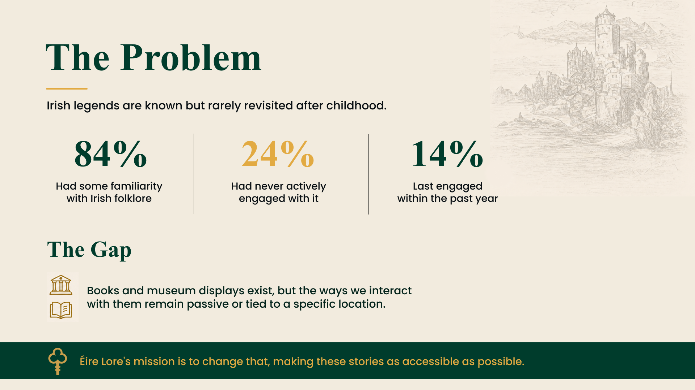
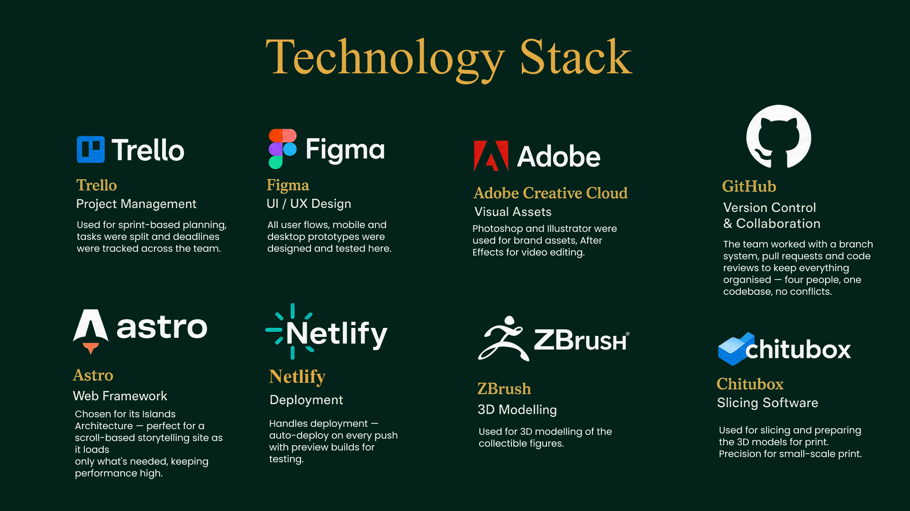

{kind=link}
role
UX Researcher, Content Lead & Front-end Developer
Focused on the structural planning of the project, helping research Irish myths, shape the site map, organise content, and guide the overall user experience.
problem
The problem
Irish mythology is rich but fragmented, scattered across academic archives, tourist blurbs, and inconsistent retellings. There was no single place where someone curious about Irish legends could explore myths, understand unfamiliar terms, and take a piece of that world home with them.
{kind=link}

Books and museum displays exist, but the ways people interact with Irish folklore remain passive or tied to a specific location.
Éire Lore's mission: make these stories as accessible as possible.
research
Researching the myths
Gathered and cross-referenced Irish legends: The Children of Lir, the Giant's Causeway, and the Banshee. Write accurate, consistent retellings that stayed true to their folklore roots while being approachable for a modern reader.
- Content audit: compared existing mythology sites and glossaries for tone, structure, and gaps
- Persona: curious learners and Irish-heritage visitors looking for an accessible entry point into the lore
- Findings: readers wanted short, story-driven summaries with an option to go deeper via a glossary
information architecture
Shaping the site map
Structured the site around how people actually browse mythology content: discover a legend, understand its terms, then bring it home.
- Myths: a growing library of retold legends
- Glossary: quick definitions for names, places, and creatures
- Store: collectible 3D-printed figures and merch tied to each myth
- About / Team: the story and people behind the project
solution
Bringing legends to life
- Read-along and narrated story pages → lower the barrier to entry for casual readers
- Cross-linked glossary terms → context without leaving the story
- Myth-matched merch collections → turns reading into a keepsake
- Warm, illustrated visual language → reinforces the "living folklore" tone
tech stack
Built with
Astro powered the scroll-based storytelling front-end, Figma carried the UI/UX design, and Trello and GitHub kept a four-person team organised across sprints. ZBrush and Chitubox handled the 3D modelling and print-prep for the store's collectible figures, with Netlify handling deployment.
{kind=link}

key screens
{kind=link}
{kind=link}
{kind=link}